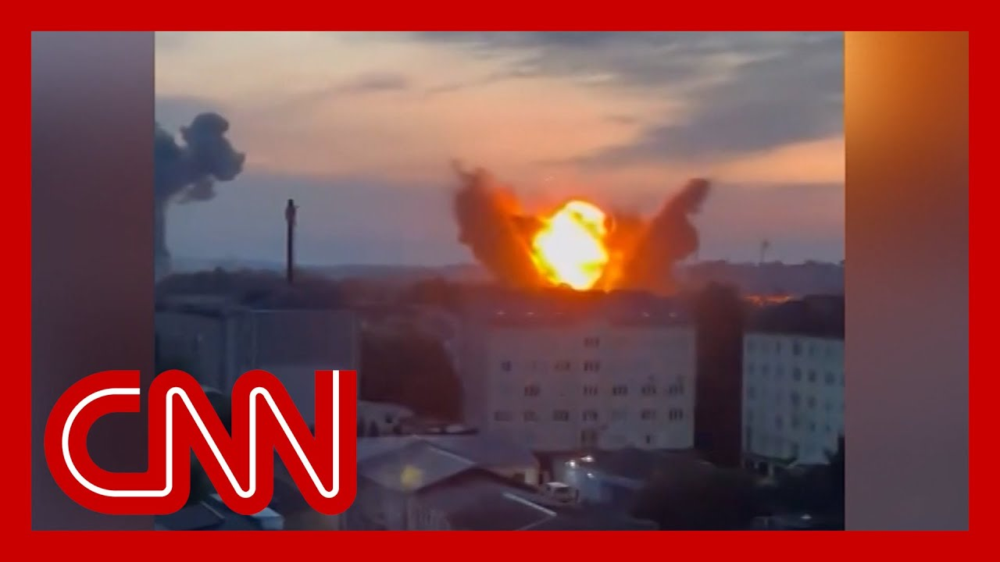

【戏剧性视频显示俄罗斯导弹袭击乌克兰】
Summary: Ukraine endured a massive Russian drone and missile attack overnight, killing at least four and injuring dozens, with President Zelensky stating nearly the entire country was targeted.
摘要： 乌克兰夜间遭受俄罗斯大规模无人机和导弹袭击，造成至少四人死亡、数十人受伤，泽连斯基总统称几乎全国都在袭击范围内。

⏱️ Estimated Reading Time: 14 min
📚 高考3500生词 📚 雅思生词 📚 托福生词 📚 GRE生词 📚 UP主推荐生词
Bracing for retaliation for days, Ukraine was pummeled in an overnight Russian attack.
数日来防备报复的乌克兰在夜间遭到俄罗斯猛烈袭击。
He reports Moscow launched one of its largest drone and missile strikes, killing at least four people and injuring nearly two dozen in the Ukrainian capital.
报道称莫斯科发动了最大规模的无人机和导弹袭击之一，造成乌克兰首都至少四人死亡、近二十人受伤。
President Volodymyr Zelensky said that Russia used more than 400 drones and 40 missiles in the barrage, adding, quote, almost all of Ukraine was in the crosshairs.
弗拉基米尔·泽连斯基总统表示，俄罗斯在此轮袭击中动用逾400架无人机和40枚导弹，并称“几乎整个乌克兰都在瞄准范围内”。
Meantime, Russian officials say that a Ukrainian drone attack hit an industrial site in the country's south are like it is in Berlin for us, for the very latest.
与此同时，俄罗斯官员称乌克兰无人机袭击了其南部工业设施，并表示“对我们而言这就像发生在柏林”。
So, listen, we all knew that Russia was going to retaliate sooner or later.
听着，我们都知道俄罗斯迟早会报复。
Did we expect the retaliation to come this quickly and in this form?
但我们是否预料到报复会来得如此迅速且以这种形式？
Well, we don't know whether the retaliation or the strikes that we saw overnight, whether that was the real retaliation for those massive strikes that we saw from the Ukrainians on those Russian airfields.
我们不确定夜间所见袭击是否是对乌克兰打击俄空军基地的真正报复。
The Russians simply said earlier today that these were strikes in response to what they call terrorist activities.
俄方今日仅称这些袭击是针对其所谓的“恐怖活动”的回应。
But one of the things that we've actually seen in the messaging of the Kremlin over the past couple of days is they've been speaking a lot about strikes on the Russian railways system that they blame on the Ukrainians, for which the Ukrainians have actually not yet claimed responsibility.
但过去几天克里姆林宫的表态中频繁提及俄铁路系统遇袭事件并归咎于乌克兰，而乌方尚未承认责任。
But they've been talking very little about those strikes on those airfields that, of course, the Ukrainians say, did so much damage.
但对乌克兰宣称造成重大损失的空军基地遇袭事件，俄方却极少提及。
Nevertheless, these strikes were massive.
然而此次袭击规模巨大。
That happened over night.
这发生在夜间。
You mentioned some of the numbers.
你提到了一些数据。
There's been more than 400 drones.
动用了超过400架无人机。
And it really seems as though the Russians have ramped up their own production of those strikes on drones that they send over into Ukrainian territory.
俄罗斯似乎已提高其用于袭击乌克兰领土的无人机产量。
And then also, if we look at the missiles that were used, there were ballistic missiles, which are very difficult to intercept, and really only the best surface to air missiles systems, like, for instance, the US made Patriot can intercept those and cruise missiles that were used as well.
此外，所用导弹包括极难拦截的弹道导弹——仅有最先进的防空系统如美制“爱国者”可应对——以及巡航导弹。
So really a full barrage that was fired by the Russians but unclear whether or not this was it or whether there is more to come.
俄罗斯发动了全面火力打击，但尚不清楚这是否是全部或还有后续。
Of course, we know from that phone call that happened a couple of days ago between US President Trump and Russian President Vladimir Putin, that Vladimir Putin apparently told Donald Trump in that phone call that he would strike back after those attacks on those airfields.
数日前美国总统特朗普与俄总统普京通话中，普京明确表示将对空军基地遇袭进行报复。
But again, from the Russian messaging, it's unclear whether or not this was it And, you know, with all of that being said, this certainly seems as though they were massive strikes, which as you said, at times, the entire country or almost the entire country was under a missile, an air raid alert, and even the Ukrainian Olympic team was affected by all this.
但俄方表态仍不明确这是否为全部报复。如你所言，此次袭击规模确实庞大，全国或近乎全国一度处于导弹空袭警报下，甚至乌克兰奥运代表团也受影响。
In the town of Lusk, a hotel that some of the athletes were staying in were hit by a blast.
卢茨克镇一处运动员下榻酒店遭爆炸袭击。
There was one athlete who actually managed to to record some of what was going on there.
一名运动员记录下了现场情况。
So devastating strikes that happened overnight, several people killed.
夜间袭击造成毁灭性打击，数人遇难。
But at this point in time, unclear whether there is more to come from the Russian scene, say.
但目前尚不清楚俄方会否继续行动。
Fred Pleitgen, live for us there.
弗雷德·普莱特根现场报道。
Thank you so much.
非常感谢。
New video coming in to CNN.
CNN收到新视频。
Now you can hear what Ukrainians have experienced over the last few hours.
现在您能听到乌克兰人过去几小时的经历。
Russia's launching a wave of drones and ballistic missiles across Ukraine, killing at least four people and wounding dozens more.
俄罗斯向乌克兰全境发动无人机和弹道导弹袭击，造成至少四人死亡、数十人受伤。
Joining us now is Leon Panetta.
现邀请到莱昂·帕内塔。
He served as defense secretary and CIA director under President Obama.
他曾任奥巴马政府国防部长和中情局局长。
And US Secretary.
及美国国务卿。
Thanks so much for joining us.
非常感谢您的参与。
Do you see these latest Russian strikes, showing that Vladimir Putin is making good on his threat to retaliate big time after Ukraine's rather humiliating attacks on Russian airfields in recent days.
您认为俄罗斯最新袭击是否表明普京正兑现其报复威胁，以回应近日乌克兰对俄空军基地的羞辱性打击？
How far do you think all of this will go?
您认为事态会发展到何种程度？
How far will Putin go?
普京会走多远？
I think to a clear message is that Putin is going to continue this war without pressure from the United States, without pressure from President Trump.
我认为明确信号是：若无美国及特朗普总统施压，普京将继续这场战争。
But he he feels that he is in control of this situation, and he's going to continue to hammer Ukraine, largely because President Trump will not put pressure on Putin.
但他自认掌控局势，并将持续打击乌克兰，主因是特朗普总统不愿向普京施压。
And as a consequence, he thinks he has a license to continue to do this and not participate in any kind of cease fire.
因此他认为自己有权继续行动且无需参与任何停火。
It is a very tragic situation right now in Ukraine.
乌克兰当前局势极其悲惨。
It's a horrible situation indeed.
确实非常糟糕。
President Trump, as you know, Mr. Secretary, spoke to Vladimir Putin on Wednesday.
如您所知，特朗普总统周三与普京通话。
I want to play for you and for our viewers and give you your reaction to something that Trump said, that he told the Russian leader, listen to this.
请听特朗普对俄领导人的一段表态并分享您的看法。
Sometimes you see two young children fighting like crazy.
有时你会看到两个小孩疯狂打架。
They aid each other and they're fighting in a park and you try and pull them apart.
他们在公园里扭打，你试图拉开他们。
They don't want to be pulled.
他们不愿被拉开。
Sometimes you're better off letting them fight for a while and then pulling them apart.
有时不如让他们打一会儿再拉开。
And I gave that analogy to Putin yesterday.
我昨日用此比喻告诉普京。
I said, President, maybe you're going to have to keep fighting and suffering a lot because both sides are suffering before you pull them apart, before they're able to be pulled apart.
我说：总统先生，或许你们必须继续战斗并承受痛苦，因为双方都在受苦，直到能被拉开为止。
The president of the United States, comparing the two sides, Ukraine and Russia, to fighting children.
美国总统将乌克兰和俄罗斯比作打架的孩子。
What do you make of that analogy?
您如何看待这个比喻？
I think what it tells me is that, there's a total advocation of leadership by the United States, in dealing with Ukraine for the president to, now turn his back on that situation and say that somehow, they've just got to continue to fight, until they're exhausted.
我认为这表明美国完全放弃了领导力——总统竟背弃局势并称双方只能继续战斗至精疲力竭。
It's not leadership.
这不是领导力。
It is not leadership.
绝非领导所为。
The president ought to be putting pressure on Putin by saying very clearly, if you will not agree to a ceasefire, then we will do everything in our power to help Ukraine defend themselves and ultimately defeat you.
总统应明确向普京施压：若不同意停火，我们将全力助乌克兰自卫并最终击败你。
That's the message that Putin has to hear.
这才是普京必须听到的讯息。
And he's not hearing that what he's hearing is a weak president basically turning his back on the situation and giving Putin a license to continue these horrible attacks.
而他听到的却是一位软弱总统背弃局势，纵容其继续发动可怕袭击。
One Ukrainian lawmaker actually told CNN that President Trump essentially gave Putin the green light to attack.
一位乌克兰议员向CNN表示特朗普总统实质上为普京开了攻击绿灯。
Do you agree?
您同意吗？
I don't think there's any question.
我认为毫无疑问。
the president just basically after this conversation, has said, you know, let him go ahead and keep fighting.
总统在此次通话后实质上表态“让他继续打吧”。
he basically gave a pass, to Russia.
他等于给俄罗斯开了通行证。
it is incredible to me.
这令我难以置信。
You know, every president we've had in the last 80 years has stood up to tyrants and has made very clear that they cannot have their way.
过去80年每位总统都勇于对抗暴君并明确阻止其得逞。
This is the first president in my memory who basically, instead of standing up to a tyrant like Putin, is essentially allowing him to have his way and not putting any kind of pressure on him to do what is right, which is to achieve a cease fire.
这是我记忆中首位不仅不抵抗普京这类暴君，反而纵容其肆意妄为，且不施压促其停火的总统。
this is historically, I think, will be viewed as the United States totally failing in leadership to be able to stand up to a tyrant who brutally invaded a sovereign democracy.
历史将记载这是美国领导力的彻底失败——未能挺身对抗野蛮入侵主权民主国家的暴君。
that history will write.
历史将铭记这一点。
Joining us now to discuss this is Maurice Ian Bremmer, president of the Eurasia Group.
现邀请欧亚集团总裁莫里斯·伊恩·布雷默参与讨论。
Ian, thanks so much for joining us.
伊恩，非常感谢您的参与。
As you know, President Putin promised a retaliatory strike for Ukraine's rather daring and successful drone attacks deep inside Russia.
如您所知，普京总统承诺对乌克兰深入俄境的成功无人机袭击进行报复。
Do you think the overnight assault was that retaliation, or could another major strike still be coming?
您认为夜间袭击就是报复，还是会有更大规模打击？
I mean, if it is, it's not much of a retaliation.
若是前者，这算不上真正报复。
with with, of course.
当然。
not to minimize, the civilian deaths that we're seeing in Kiev.
并非要淡化基辅平民伤亡。
but the Russians have been targeting civilians, unlike the Ukrainians, all the way through this war.
但与乌克兰不同，俄方始终以平民为目标。
and Ukraine has been able to shoot down an awful lot.
而乌克兰已拦截大量袭击。
That's very little compared to $300 drones, taking out $100 million strategic bombers.
相比300美元无人机摧毁价值1亿美元战略轰炸机的战果，这微不足道。
of Russia.
俄罗斯的。
and even in Putin's controlled information environment, that's not going to look like much of a retaliation.
即便在普京控制的信息环境下，这也不像有力报复。
So, no, I don't think we've seen the full extent of what we're going to expect from this point.
因此我认为目前所见远非全部。
I suspect you're right.
我认同您的判断。
and Putin spoke on the phone on Wednesday.
普京周三通话中。
President Trump said the Russian leader told him Moscow would have to respond to Ukraine's drone attack.
特朗普总统称俄领导人表示必须回应乌克兰无人机袭击。
A Ukrainian parliament, a parliamentarian, is accusing Trump of giving Putin an actual green light to do so.
乌克兰议员指控特朗普实质为普京开了绿灯。
Do you think that's how Putin actually sees it?
您认为普京也这样认为吗？
I guess he sees that as a flashing yellow.
我认为他视为黄色闪烁信号。
I mean, President Biden tried to stick against Putin to try to get him to back away from this illegal invasion, and Biden failed.
拜登总统曾强硬对抗普京试图迫其退出非法入侵，但失败了。
Trump has now tried to carrot with Putin, to sweeten the offer, engage diplomatically, say that he'll get rid of, sanctions, willingness to engage on national security and economic investment.
特朗普改用怀柔政策，通过外交接触承诺解除制裁，并在国家安全与经济投资领域示好。
And Putin has said no.
而普京拒绝了。
So they both failed.
因此两者均告失败。
and I think the more important meeting this week, Wolf, was yesterday, in the Oval Office, with Chancellor Merritts, from Germany and here what we see is that the US and NATO are much more aligned on Ukraine today than they were a month ago, when Zelensky was getting beaten up by Trump in the Oval Office and the U.S. was suspending intelligence and military support.
我认为本周更重要的会议是昨日与德国总理默茨的椭圆办公室会谈——如今美北约在乌克兰问题上比一月前协调得多，当时泽连斯基在椭圆办公室遭特朗普抨击，美国暂停情报与军事支持。
We're very far from that.
现在情况大不相同。
Trump is now thinking about washing his hands from the diplomacy, but he has a critical minerals deal with Ukraine, and you're going to see continued U.S. intelligence support and weapons sales, to support the Ukrainians on the ground.
特朗普虽考虑退出外交，但与乌克兰达成关键矿产协议，且将继续提供情报支持和武器销售以援助乌方。
So in that regard, the war is ongoing, and there's going to be a lot of pain and human suffering and a lot of cost.
因此战争将持续，带来巨大痛苦与人道代价。
But the Americans aren't walking away from NATO, aren't walking away from Ukraine.
但美国并未放弃北约或乌克兰。
I think that's quite important.
我认为这至关重要。